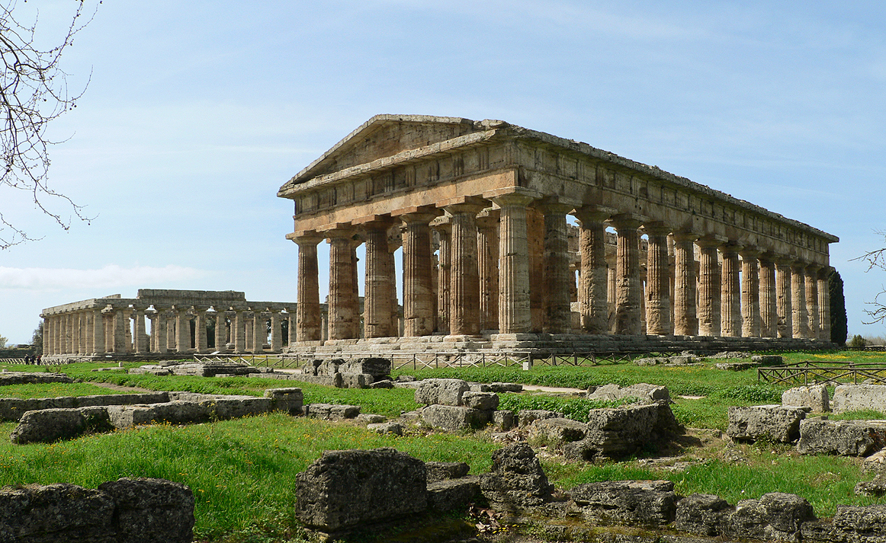

1. Duomo di Salerno (Catedral de San Mateo)
Una de las catedrales más importantes del sur de Italia. Su imponente fachada, interior normando y la cripta con los restos del apóstol San Mateo la convierten en una visita imprescindible.
La Puerta de la Costa Amalfitana • Italia
Historia, mar y autenticidad italiana
Salerno es una ciudad vibrante y auténtica, menos turística que sus vecinas de la Costa Amalfitana. Con un hermoso centro histórico, un largo paseo marítimo y una rica historia medieval, es el punto ideal para explorar la región sin las multitudes de Positano o Capri.

Una de las catedrales más importantes del sur de Italia. Su imponente fachada, interior normando y la cripta con los restos del apóstol San Mateo la convierten en una visita imprescindible.

El bello paseo marítimo de Salerno. Con palmeras, fuentes y vistas al mar, es perfecto para caminar, disfrutar del atardecer y observar la vida local.

Impresionante fortaleza árabe-normanda situada en lo alto de la colina. Ofrece vistas panorámicas espectaculares de toda la ciudad y el Golfo de Salerno.

Calles medievales llenas de encanto, iglesias, palacios y tiendas. Es el corazón vivo de Salerno, ideal para pasear y descubrir su atmósfera auténtica.

Antiguo jardín botánico medicinal del siglo XIV con hermosas terrazas y vistas panorámicas. Uno de los jardines medievales mejor conservados de Europa.

Impresionantes ruinas griegas con tres templos dorados excepcionalmente bien conservados. Declarado Patrimonio de la Humanidad por la UNESCO.
“Salerno combina la belleza de la Costa Amalfitana con el alma auténtica y vibrante del sur de Italia.”

Salerno está en el corazón de la zona de producción de la auténtica mozzarella de búfala DOP. Fresca, cremosa y llena de sabor. Pruébala sola o en ensalada caprese.

Pasta fresca típica de la Costa Amalfitana, más ancha y corta. Generalmente servida con mariscos frescos, ajo, tomate y perejil.

Salerno tiene excelentes pizzerías. Prueba la clásica Margherita o la Pizza con bufala y pomodorini. Menos turística que en Nápoles, pero igual de deliciosa.

Los dulces más famosos de la región. La sfogliatella riccia (hojaldre crujiente relleno de ricotta) y el babà (bizcocho embebido en ron) son imprescindibles.

Por su ubicación costera, Salerno ofrece excelente pescado del día, almejas, mejillones y risotto ai frutti di mare.
Salerno es una excelente opción para probar la auténtica cocina campana a precios más razonables que en Positano o Capri. Busca restaurantes en el centro histórico y cerca del Lungomare. No olvides terminar con un limoncello local.

Uno de los mejores restaurantes de Salerno. Cocina creativa con productos locales y excelente presentación. Muy buena carta de vinos.
Recomendado para: Cena especial o romántica.

Clásico frente al mar en el Lungomare. Especializado en pescado fresco y mariscos. Excelente relación calidad-precio y vistas agradables.
Recomendado para: Almuerzo o cena con vista al mar.

Auténtica trattoria familiar en el centro histórico. Platos caseros tradicionales, pastas frescas y ambiente acogedor. Muy recomendado por locales.
Recomendado para: Comida auténtica y abundante.

Una de las pizzerías más antiguas y queridas de Salerno. Pizza napolitana tradicional en horno de leña. Ambiente animado y auténtico.
Recomendado para: Pizza y comida informal.

Restaurante moderno con terraza y vistas panorámicas. Cocina mediterránea contemporánea y excelente para disfrutar del atardecer.
Recomendado para: Cena con vistas.
• Salerno ofrece muy buena calidad-precio comparado con Positano o Capri.
• Reserva con anticipación en los restaurantes más populares durante el verano.
• La zona del Lungomare y el centro histórico concentran la mejor oferta gastronómica.
• Prueba siempre la mozzarella di bufala y el limoncello local.